A.1 · One source set prepared
Shoot & select
the pictures.
Nine views cover the reflective front and right-hand facades. Window frames provide alignment points.
Explore the nine photographs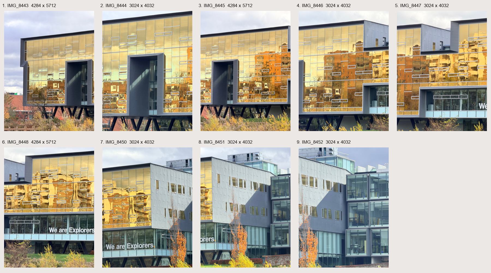
SYDE 671 · Assignment 3 · James Xie
Align overlapping photographs and blend them into mosaics.
The project so far
Explore the source photographs and the recovered transformations between neighboring views.
A.1 · One source set prepared
Nine views cover the reflective front and right-hand facades. Window frames provide alignment points.
Explore the nine photographs
A.2 · 8 homographies recovered
Eight adjacent pairs connect through IMG_8448. Each H uses 12 fitting points and four check points.
Read the homography report
A.3 · Warping & rectification
Rectify two windows and warp two adjacent views. Compare handwritten nearest-neighbor and bilinear sampling.
Explore warping & rectification
A.4 · Seven views, one mosaic
Blend seven views into one wider image. Compare feathering with direct overwrite.
Explore the mosaic
B.1 · Harris corners & ANMS
Select 500 corners per image. Compare the strongest Harris responses with handwritten ANMS.
Explore Harris & ANMS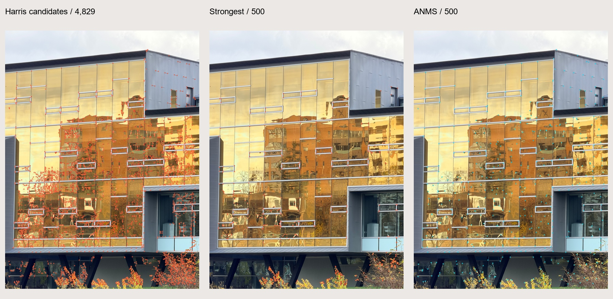
B.2 · 3,500 patch descriptors
Convert 40 × 40 regions into normalized 8 × 8 patches and 64-dimensional descriptors.
Explore feature descriptors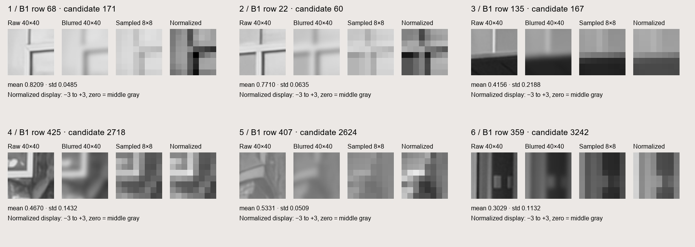
B.3 · Six adjacent image pairs
Find 552 tentative matches using nearest neighbors and the ratio test. Inspect mutual-neighbor consistency.
Explore descriptor matching
B.4 · One automatic seven-image mosaic
Estimate six H values with handwritten four-point RANSAC. Compare the seven-image automatic mosaic with the manual result.
Explore the automatic mosaic
A.1 · Selected source photographs
Selected viewing order. Open each photograph at its original resolution; three images are 4284 × 5712 and six are 3024 × 4032.
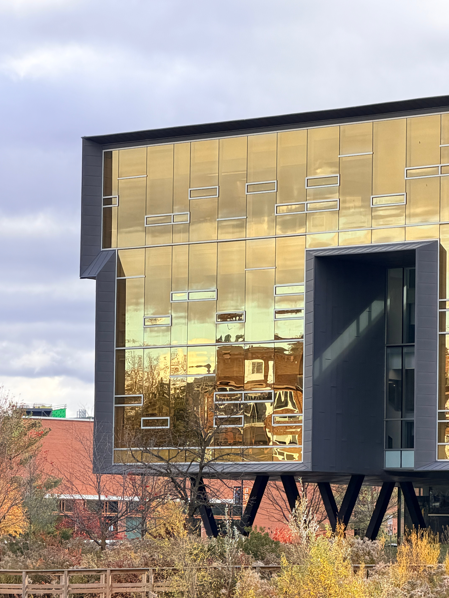
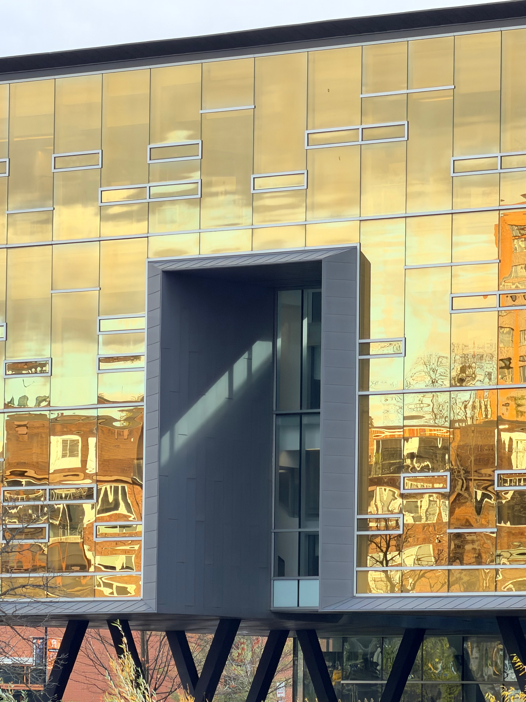
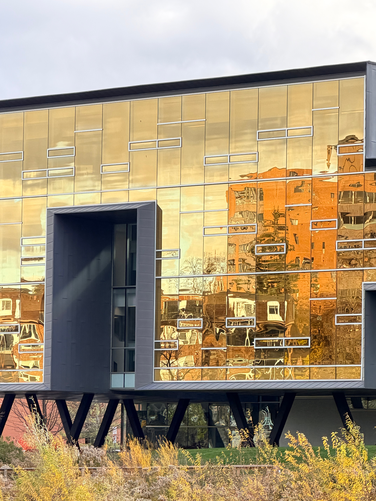
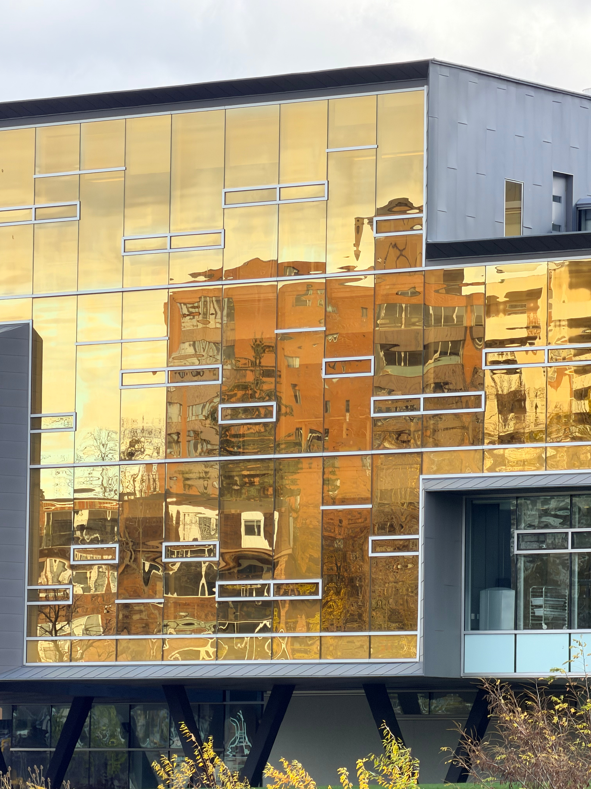
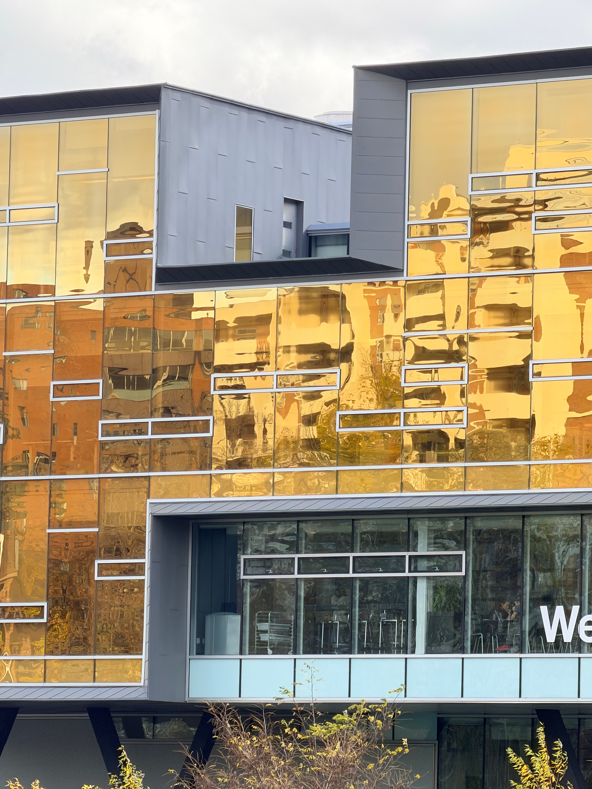
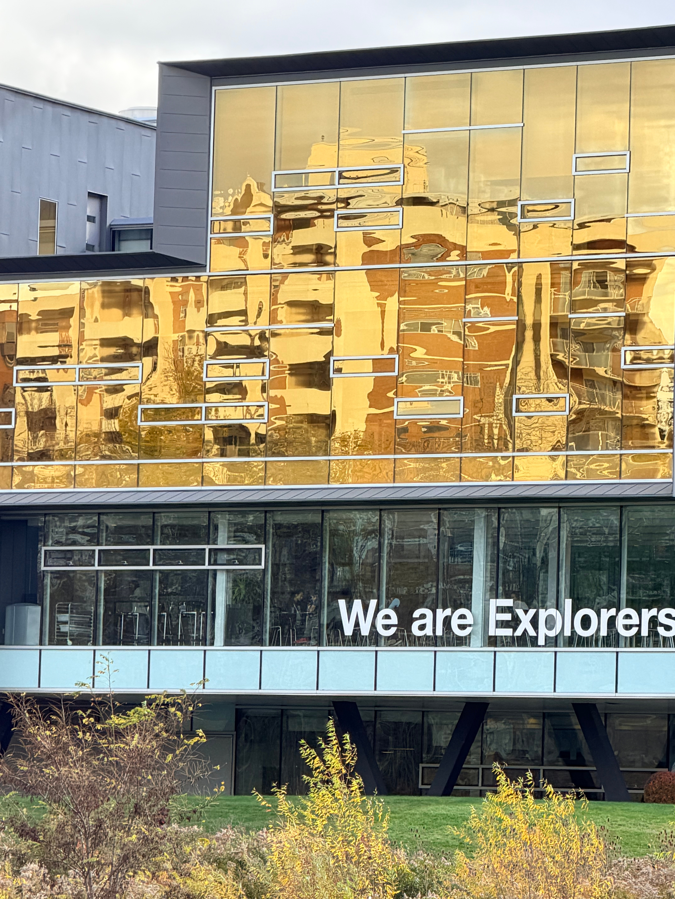
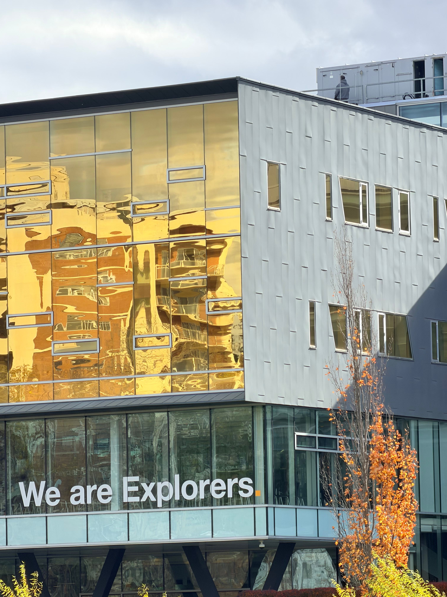
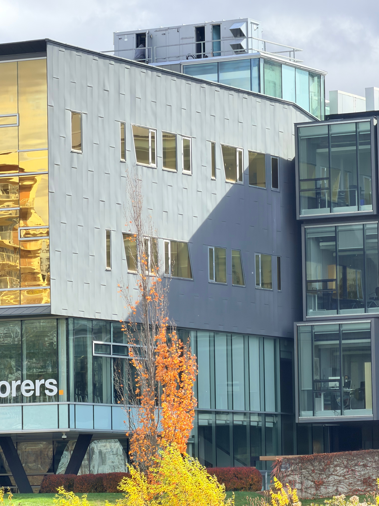
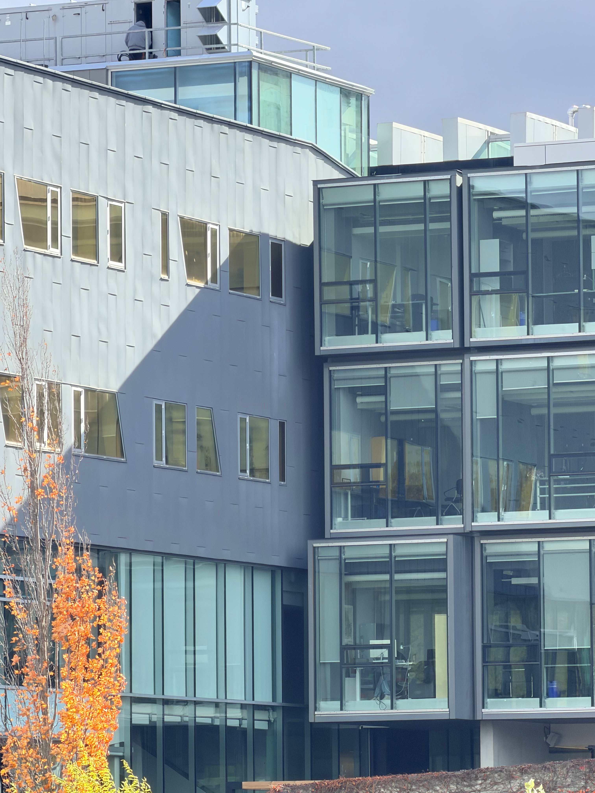
One nine-photo set is prepared; the original A.1 request for two sets remains unmet. The clarified Part A mosaic requirement is met in A.4. A fixed camera center is unverified.
Bridge added: IMG_8447 → IMG_8448 → IMG_8450 connects the sequence. See the first bridge pair and second bridge pair.
The Part B pipeline
B.1–B.4 cover corner detection through automatic stitching. The final mosaic uses seven images; the clarified minimum is three.